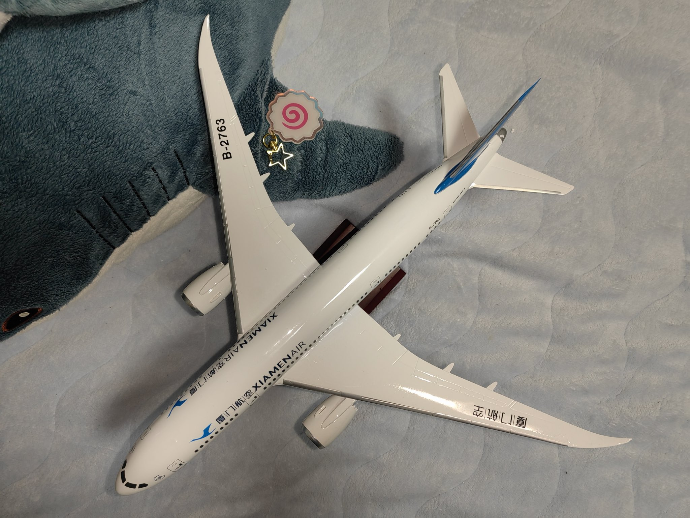

收到的第三件生日礼物～感谢@Kawaii_Saint 帮咱满足的心愿～抱住贴贴～୯(*´ω｀*)୬
偶遇本体的缘分，也是咱的第一只民航机模～不知道是不是绝版了呢总之闲鱼上还能买到⸝⸝⸝˘◡˘❤️
嗯无论它做工有多光滑细腻，身上最可爱的地方都是B-2763的编号～民航最浪漫的感觉就是缘分啦

偶遇本体的缘分，也是咱的第一只民航机模～不知道是不是绝版了呢总之闲鱼上还能买到⸝⸝⸝˘◡˘❤️
嗯无论它做工有多光滑细腻，身上最可爱的地方都是B-2763的编号～民航最浪漫的感觉就是缘分啦

喵呜◝(⑅•ᴗ•⑅)◜..°♡～回家的路上在厦门转机，发现隔壁机位停的787小可爱和中转住宿酒店里的模型是同一只诶～序列号一样喵(,,>᎑<,,)
好幸运的巧合w🥰
然后这个机模标价好便宜…性价比很高的感觉）可惜问了说是线下都没货惹
( •̥́ ˍ •̀ू) https://t.co/EIUzXewL8I
好幸运的巧合w🥰
然后这个机模标价好便宜…性价比很高的感觉）可惜问了说是线下都没货惹
( •̥́ ˍ •̀ू) https://t.co/EIUzXewL8I